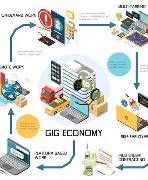

Introduction

This section presents the main findings from my investigation into Uber driving as a career opportunity in South Africa. Information was collected through online research and a questionnaire completed by 20 respondents.
Finding 1: Employment Opportunities
Uber creates opportunities for people to earn an income by connecting drivers with passengers through a digital platform. Drivers can use the application to receive trip requests and provide transport services. This is an example of the gig economy, where people earn money through individual tasks or services.
Finding 2: Technology and Digital Skills
Technology plays an important role in Uber driving. Drivers need a smartphone, internet access and the Uber Driver application. GPS helps drivers identify their location, find passengers and follow routes to destinations. Drivers also need basic digital skills to use the application and communicate with passengers.
Finding 3: Benefits and Challenges
Uber driving can offer flexible working hours and an opportunity to earn an income. However, drivers may also experience challenges such as changing earnings, fuel expenses, vehicle maintenance and financial uncertainty. These factors can affect how much money a driver takes home.
Questionnaire Results
A questionnaire was completed by 20 respondents to understand their experiences and opinions about Uber.
Have you ever used Uber?
All 20 respondents (100%) indicated that they had used Uber before. This shows that everyone who completed the questionnaire had experience with the service.
How often do respondents use Uber?
The results show that monthly use was the most common response, with 8 respondents (40%). Weekly use was the second most common, with 7 respondents (35%).
Conclusion
The investigation shows that Uber provides an example of how digital technology can create employment opportunities through the gig economy. A smartphone, internet access, GPS and digital skills are important resources for drivers. Although the work offers flexibility, drivers must also consider the costs and uncertainties involved.